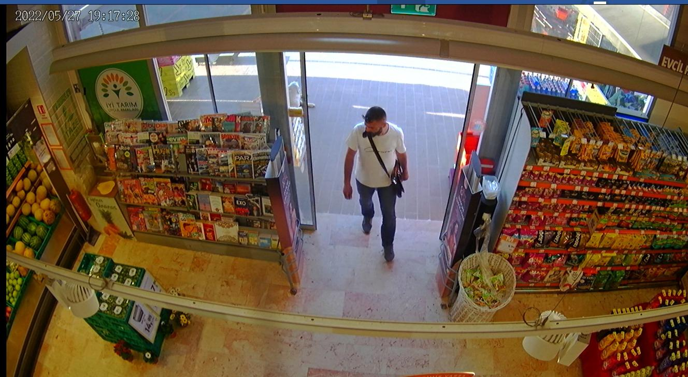
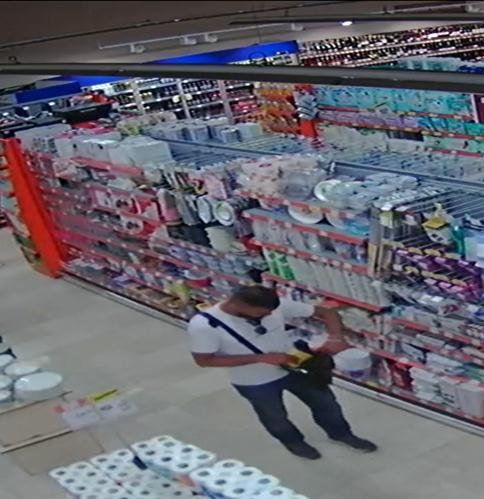
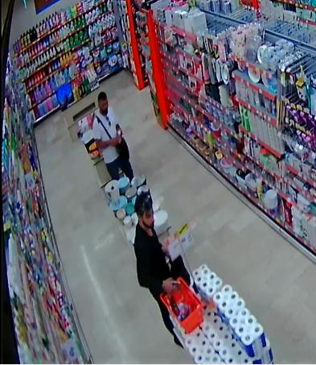
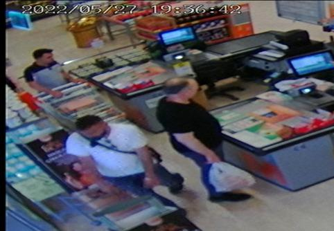
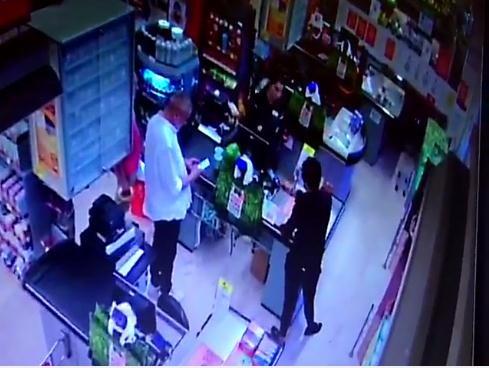
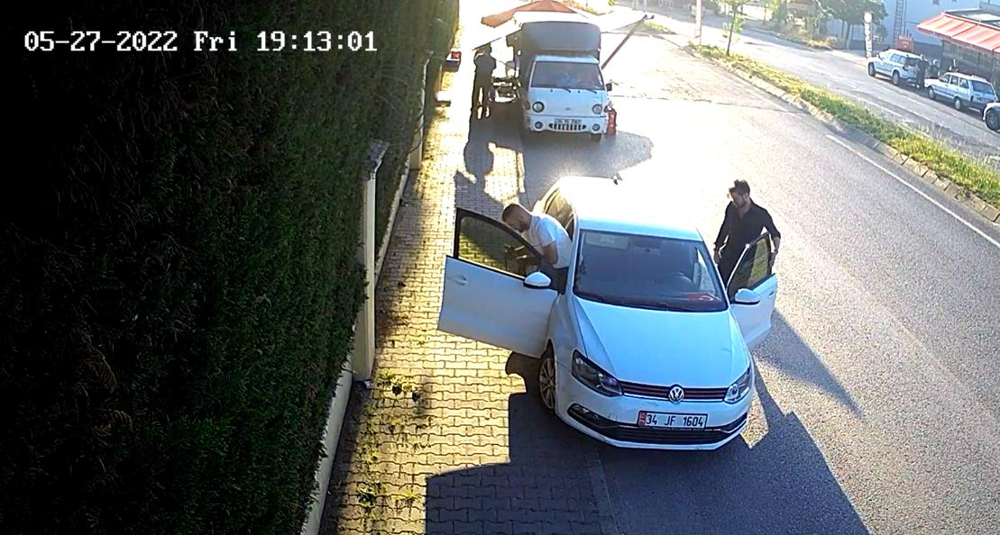

CD İNCELEME ARAŞTIRMA VE TESPİT TUTANAĞI
27.05.2022 günü idaremiz Tepeören Mahallesi Karacabey Caddesi Tepeören Ticaret Merkezi No:3 sayılı adreste bulunan Migros süpermrket isimli işyerinde meydana gelen ve Orhanlı Polis Merkezi Amirliğince “2022/994 Açıktan Hırsızlık” konusuyla ilgili olarak Tuzla Devriye Ekipler Amirliğine bağlı 95-170 ve 95-172 kod nolu Hırsızlık araştırma timi olarak yapılan çalışmalarda; Bahse
konu
olayla
alakalı
Migros
isimli
işyerinin
kamera
görüntüleri
incelendiğinde(kamera saati güncel) 27.05.2022 günü saat 19:16 sıralarında bahse konu işyerinin önüne gelen beyaz renkli hatchback bir aracın bahse konu işyerinin otoparkına girdiği görülmüş ve bu araçtan 175 cm boylarında üzerinde siyah renk gömlek, siyah renk pantolon, siyah renk ayakkabı ve başının üstünde güneş gözlüğü, omuzunda siyah renk bir çantası olan 30’lu yaşlarda sakallı olan bir erkek şahıs(1. Şüpheli şahıs) ve yine bu şahısla birlikte aynı araçtan inen; 30’lu yaşlarda 175-180
m boylarında üzerinde beyaz renk t-shirt mavi renk kot pantolon, t-shirtüne asılı vaziyette bulunan bir adet güneş gözlüğü olan, omuzuna asılı vaziyette laptop çantası görünümünde siyah renkli bir çantası ve taban kısmı beyaz renkli olan açık renk ayakkabı giyinimli kısa saçlı bir erkek şahsın(2.
Şüpheli şahıs) bahse konu Migros isimli işyerine girdiği görülmüştür.
Şüpheli şahısların mağaza içerisine girişleri anları
1.Şüpheli
şahısın
mağaza
giriş anı
2.Şüpheli
şahısın
mağazaya
giriş anı
1

Bahse konu iki şüpheli şahsın mağaza içerisinde gezdiği ve ellerine aldıkları market sepetinin içerisine mağaza içerisinde aldıkları ürünleri koydukları görülmüştür. Şahısların mağaza içerisinde alkol reyonuna geldiklerinde burada üzerinde alarm bulunan 3 adet CHIVAS REGAL
18YO 70cl markalı viskileri aldıkları ve bu ürünlerin alarmlarını mağaza içerisinde kesici bir aletle sökerek siyah giyinimli olan şüpheli şahsın çantasına koyduğu görülmüş, ayrıca beyaz t-shirtlü 2.
Şüpheli şahsın Nivea markalı bir adet krem ve Nivea marka temizleme bandını alarak ürünlerin üzerindeki yapışkan alarmlarını sökerek çantasına koyduğu görüntülerden tespit edilmiş ve beyaz t-shirtlü şahsın kasaya uğramadan mağazadan çıktığı ve siyah giyinimli olan birinci şüpheli şahsın kasaya yöneldiği ve market içerisinde çalmış oldukları ürünler dışında kredi kartı kullanarak 11,55TL
tutarında alış veriş yaparak marketten ayrılmış ve gldikleri araca binerek saat 19:45 sıralarında olay yerinden ayrılmışlardır. Konu ile alakalı olarak müşteki ile yapılan görüşmede ilk tespitte 3292,90TL
zararlarının olduğu beyan etmiştir.
Şüpheli şahısların alkollü içecekler bölümünden içkileri alması ve alarmlarını kestikleri anlar Şüpheli şahısların alkollü
içecekleri alması ve ellerindeki sepete koyması
2.şüpheli şahsın almış
1.şüpheli şahsın
olduğu diğer ürünleri
aldıkları alkollü
çantasına koyduğu anlar
içeceklerin alarmlarını
kesici aletle kestiği an
2



1.şüpheli şahsın içkilerin alarmını söktükten sonra sırt çantasına koydukları anlar 2.şüpheli
şahıs
1.şüpheli şahsın
1.şüpheli şahsın
2.şüpheli
alkollü içeceklerin
alkollü içeceklerin
şahıs
alarmını söktükten
alarmını söktükten
sonra çantasına
sonra çantasına
koyduğu anlar
koyduğu anlar
2.şüpheli şahsın kasada ödeme yapmadan doğrudan dışarı çıktığı an ve 1.şüpheli şahsın kasada almış
11,55 TL tutarındaki ödeme yaptığı anlar 1.şüpheli şahsın 11,55 TL
tutarındaki ödeme yaptığı an
2.şüpheli şahsın ödeme
yapmadan mağazadan
çıkış anı
3

Şüpheli şahsıların geldikleri araçla hırsızlık sonrası olay yerinden ayrılışları Şüpheli şahısların hırsızlık
sonrası olay yerinden
geldikleri araçla ayrılışları
Bahse konu Açıktan hırsızlık konusuyla alakalı olarak yapılan kamera çalışmalarında şüpheli şahısların gelebilecekleri güzergah üzerinde bulunan Karacabey Caddesi No:2 Bautek Kuğu Evleri Sitesinin kamera görüntüleri incelendiğinde(kamera saati 2 dk ileri) şahısların bahse hırsızlık öncesinde değerlendirilmiş ve şahısların bahse konu hırsızlık olayı öncesinde saat 19:12 sıralarında Migros isimli işyerinin arkasında 34 JF 1604 plaka sayılı beyaz renkli hatcback Wolkswagen Polo marka modelli bir araçla geldikleri ve aracı buraya park ettikleri burada bir süre araç dışına çıkıp aracın etrafında dolaştıkları ve aracın bagaj kısmını açtıkları burada birbirleriyle konuşup bir takım hazırlıklar yaptıkları görülmüştür. Şahısların hırsızlık öncesinde burada bir süre bekledikten sonra saat 19:16:40 sıralarında mağazanın otopark girişinden girdiği görülmüştür.
Şahısların hırsızlık öncesi Migros mağazası arkasına gelmesi ve burada bir süre beklemesi(Butek
Kuğu Evleri kamera saati 2 dk ileri)
Bahse konu
hırsızlık yeri
olan Migros
Mağazası
arkası
2.şüpheli
şahıs
1.şüpheli
şahıs
34 JF 1604
4
34 JF 1604 plaka sayılı aracın yapılan sorgusunda aracın Bağcılar/İstanbul’dan ……..
şirketine ait kiralık araç olduğu ve aracı kiralayan şahsın 16103137642 T.C. kimlik numaralı Onur YURDAKUL isimli şahıs olduğu, şahsın benzer suçlardan ve birçok farklı suçtan suç kaydının olduğu görülmüş, şahsın yapılan mernis sorgusunda Gürsel Mahallesi Kafiye Sokak No:10/A Kağıthane/İSTANBUL adresinde ikamet ettiği anlaşılmıştır. Yapılan POLNET fotoğraf incelemelerinden Onur YURDAKUL isimli şahsın Migros isimli mağazaya hırsızlık için giren birinci şüpheli şahıs olarak tabir ettiğimiz şahıs olduğu kesin ve net olarak tespit edilmiştir.
Onur YURDAKUL isimli şüpheli şahsın ve 2. Şüpheli şahsın tabir ettiğimiz şahsın tespitine ve yakalamasına yönelik çalışmalarımız devam etmekte olup; İşbu CD İNCELEME ARAŞTIRMA VE TESPİT tutanağı tarafımızdan tanzimle altı birlikte imzalanmıştır.
289876
373959
380084
482671
P.M.
P.M.
P.M.
P.M.
5